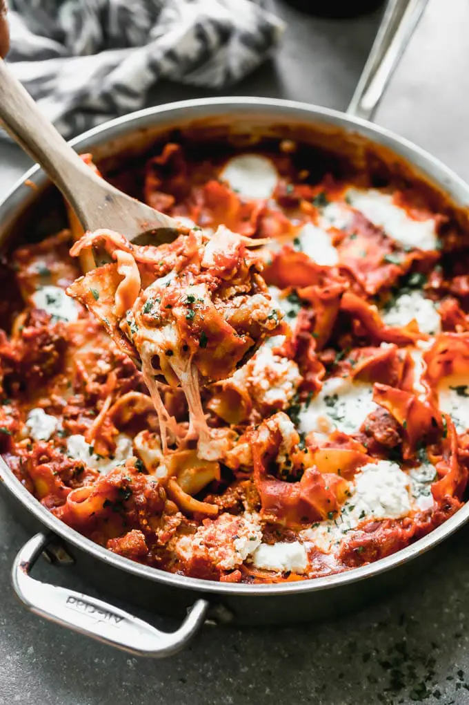

Deconstructed Lasagna

Description
Deconstructed lasagna is a wonderfully easy dish for the busy home chef.
Relieve stress with this recipe by breaking noodles and throwing everything
in the same pan at one time.
The noodles, cheeses, and every other ingredient
can be substituted for whatever the chef has in the pantry tonight.
Not feeling like spinach and ricotta? Try some kale and gorgonzola.
Want to avoid a tomato sauce? Use pesto. Don't have lasagna noodles?
Use fetuccine. Want meat and onions? Do it. The possibilities are only
limited by your imagination.
Ingredients
- 16oz box of uncooked lasagna noodles (or any kind, really)
- 8oz of ricotta cheese
- 8oz of mozzarella cheese
- 8oz fresh spinach
- 16oz jar of red pasta sauce (preferably homemade)
- salt to taste
Directions
- Heat pot on medium heat.
- Add a small splash of water, just enough that it doesn't immediately evaporate.
- Add spinach, whole or chopped, up to you.
- While spinach is cooking, break lasagna into ~3" squares
- Cook spinach until almost all water is gone from the pot. Dry, but not
burnt or sticking to the pot.
- Add sauce, pasta, and salt to taste to pot with spinach.
- Occasionally stirring, simmer until pasta is cooked aldente.
- Turn off heat.
- Add all cheese and stir until melted.
- Eat.
Return to Homepage